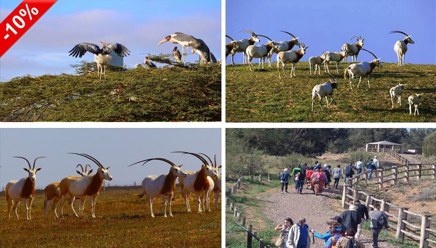
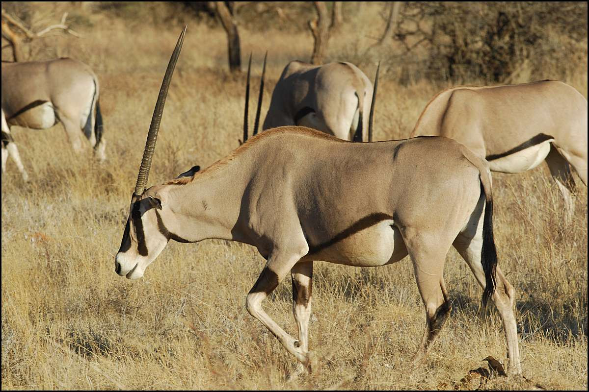

")
")

80 €
Booking
Extending over 33,800 hectares south of Agadir, the Souss Massa National Park (PNSM) site represents a national heritage which testifies to the richness of considerable biological and ecological diversity. It is home to more than 300 plant species, including the argan tree. There are 30 species of mammalian fauna: fox, jackal, hare, roe deer, porcupine and more. The park also has 250 species of birds, including the bald ibis, whose colony is the largest in the world. Other inhabitants, the red-necked ostriches, offer a touching spectacle. This vast natural space, ideal for a family outing, offers discovery trails and exceptional landscapes:
steppes, cliffs, coastal dunes, wetlands, a wintering area for a large number of migratory birds. Throughout the routes, you will be conquered by touching shows of antelopes, red-necked ostriches, Dorcas gazelles, etc ...
Hiking program:
Duration 4 hours:
- Explore a national park on the Atlantic coast of Morocco.
-View the endangered
species roaming the national park.
-Enjoy the flexibility of stops as required
Includes:
-Hotel pick up and drop-off service.
-Air-conditioned transportation
-WiFi in the Car
-Entry fees
-All taxes & fees
Not included:
-Food and drink
Gallery
- 